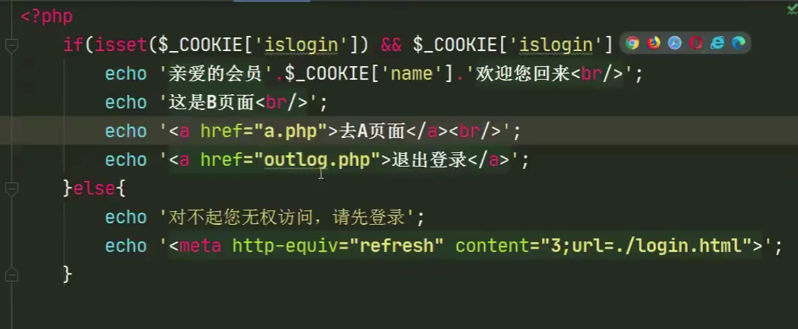
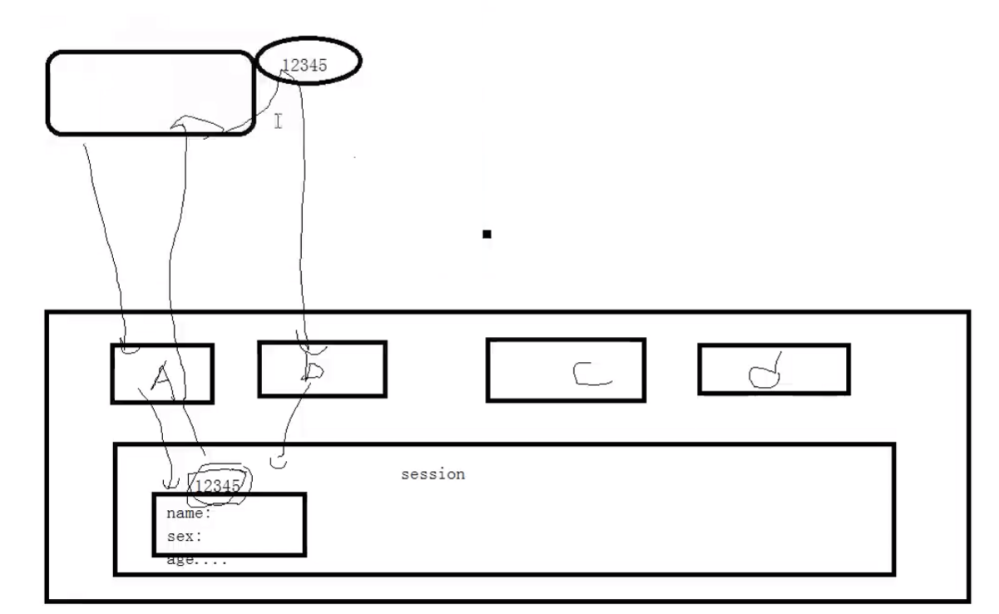

CMS登录操作和cookie&session的使用
PHP基础
php基本语法F
基本HTML之meta标签
组成：
http-equiv属性
目的：相当于http文件头的作用。
参数有：
Expires（期限）、Pragma（让访问者无法脱机访问）、Refresh（刷新）、Set-Cookie（cookie设定，例如如果网页过期，cookie将删除）、Window-target（窗口显示设定）、content-Type（显示字符集设定）
- content属性（即http-equiv属性的值）
name属性
目的：告诉搜索引擎关于这个网站的信息的名字
参数有：Keywords（关键字）、description（对网站内容的描述）、robots（机器人向导，用来告诉机器人哪些需要索引哪些不需要）、author（作者）、generator（信息参数，网站用什么软件制作的）、COPYRIGHT（版权信息）、revist-afte（网站重访）
content属性（即name属性的值）
目的：便于搜索引擎机器人查找信息和分类信息用
参数有：
robots中：
all（文件将被检索，页面中的链接可被查询）、none（文件不被检索，页面中的链接不可被查询）、index（文件将被检索）、follow、noindex、nofloow。
作用：
SEO（搜索引擎优化）、定义页面使用的编码、自动刷新并指向新的页面、实现网页转换的动态效果、控制页面缓冲、网页定级评价、控制网页显示的窗口
HTTP协议
- 一种超文本传输协议
- 无状态跟踪协议（老年痴呆型）
- 当你访问了服务器后，关闭网页，再次访问服务器，服务器不会意识到是你在访问（记不住人）
- 方法一：基本思路。如果客户端浏览器的应用程序需要和不支持cookie的服务器打交道，那么只能使用最原始的，用input标签读取用户输入到的信息，并传入php中，再与数据库中的用户名和密码做对比。（用户名和密码一般都会存储一份在服务器中）
- 方法二：实现不需要每次都输入用户名和密码。把用户名和密码存储到浏览器里，然后让每次HTTP请求都自动带数据给服务器。这个技术我们称为cookie。（存储用户信息的凭证）
- 方法三：比cookie更安全的方法，会话Session，即把Session-ID加入到cookie中，而Session-ID对用户名和密码做了加密，并存储在服务器中。
- 当你访问了服务器后，关闭网页，再次访问服务器，服务器不会意识到是你在访问（记不住人）
Cookie
是什么
-
cookie的工作原理：（即带着一张储存访问信息的卡片，只要set-cookie后，每一次请求都要带着）

-
cookie都是存储在客户端的。
-
即客户端可以查看cookie
-
客户端也可以禁止cookie
- 禁止后，如果有些网站是需要拿cookie登录的（即cookie中存储用户名和密码），则登录不进去了
-
通过PHP可以创建并取回cookie
-
-
功能
- cookie解决的是http超文本链接协议属于无状态协议的问题
- 无状态协议：当你访问了服务器后，关闭网页，再次访问服务器，服务器不会意识到是你在访问
- cookie可以存储用户名、密码、登录有效时长
- cookie解决的是http超文本链接协议属于无状态协议的问题
-
弊端
- 不安全。因为直接存储在客户端，所以依赖于客户端，所以如果你的客户端浏览器被黑了，那么所有存在cookie中的密码用户名将会泄露。改进：会话Session
使用方法
-
核心：
setcookie()函数-
添加cookie值
setcookie('下标','值','有效时间','有效作用域')第四个值如果是
/表示当前作用域下可以用 -
修改cookie值
setcookie('下标','新值','有效时间','有效作用域') -
删除cookie值
setcookie('下标',null,'有效时间','有效作用域') -
查看cookie值
- 依赖系统所提供的
$_COOKIE预定义数组变量，所有的对cookie设置的值都会成为该数组变量的一个元素。例如使用特定的COOKIE的值$_COOKEI['下标'] - 查看用
var_dump()和print_r()，但无法在添加/删除/修改的当前页面查看COOKIE值。
- 依赖系统所提供的
-
$_COOKIE()数组- 一个预定义数组变量
- 一个可以跨页面的变量
-
代码流程
-
在html页面中，写从用户获取用户名和密码的语句，利用
form表单和post传值进一个php文件进行处理。 -
创建cookie，在那个php文件里写处理传进来的值的操作，操作用
setcookie()数组 -
**登录（验证特定的cookie信息是否存在）**后的界面书写，一个php里：

-
**退出登录（清除cookie信息）**操作，一个php里

Session
是什么
-
工作原理

-
Session_ID会存在cookie里-
Session_ID是一个经过服务器对原始的用户名和密码，加密后的一串数字，所以只有服务器存储了原始用户名和密码
-
Session_ID服务器会存一份，客户端会存一份包含了Session_ID的cookie
-
每一次会话的请求，客户端都会带着含有Session_ID的cookie向服务器发送请求
-
所以如果在客户端浏览器中关闭cookie服务将登录不了
-
如果黑客修改了Session_ID，服务器就将识别不了
-
使用方法
-
session_start()开启session会话只要使用的Session的相关函数或者数组，就必须要在最前面加一个这个函数。
-
sessionid()设置或获取Session_ID的值 -
session_name()获取cookie中的session的名字的函数，便于适应名字的改动。 -
session_destroy()摧毁服务器中的session文件 -
核心：
$_SESSION()预定义变量-
添加session
$_SESSION['下标']=值 -
修改session
$_SESSION['下标']=新值 -
删除session
-
删除session的变量值（保留数据类型）
$_SESSION=array() -
删除所有的session信息（包括服务器中的session_ID的文件）
一般用于退出操作
- 使客户端COOKIE中的session过期
- 清空
$_SESSION的变量值 - 摧毁服务器的SESSION文件
-
-
查看session
-
查看全部session信息
var_dump()或者print_r -
查看特定session信息
$_SESSION['下标']
-
-
代码流程
-
在html中写用户输入的东西。
-
在那个php文件里写处理传进来的值的操作。

-
登录后的界面书写，一个php里
-
退出操作（比cookie多了两步操作）
session配置文件
-
如何找到关于session的配置
php.ini文件-[SESSION]模块里 -
配置文件相关选项
session.save_handler = files设定session的存储方式为files文件形式session.use_cookie =1是否使用cookie来存储session的idsession.use_only_cookie=1是否仅使用cookie来存储session的id；若设置为0就是可以用**（除了cookie以外的）其他传送方式（自动/手动）传送session_id**session.name=PHPSESSID设置session的名字为PHPSESSIDsession.auto_start=0设置用户是否自动开启session类的加载必须在开启session之前，所以不能设置自动开启session
session.cookie_lifetime=0session使用cookie的生存时间，0表示关闭浏览器前都有效session.cookie_path= /设置session使用cookie的有效路劲，/代表当前路径下有效session.cookie_domain =设置session使用cookie 的有效域名，空代表当前域名下有效session.cookie_httponly =设置session使用cookie这一操作是否只被允许在http协议中session.serialize_handler = phpsession的串行化方式为php的串行化方式串行化：把多个属性值转化成一个字符串的方式
session.gc_probability=1垃圾回收机制的除数session.gc_divisor=1000垃圾回收机制的被除数session.gc_maxlifetime = 1400session垃圾回收的最大时间session.user_trans_sid=0session是否使用自动传输方式传session的id，0为不自动（即手动），1为自动session.trans_sid_tags="a=href,area=href,frame=src,form="session可以传送id的方式 -
session_id的传送方式
-
方法一：一般通过cookie传送
-
方法二：基于
URL的session会话原理（不通过cookie）此方法当禁用cookie时，也可以使用成功

-